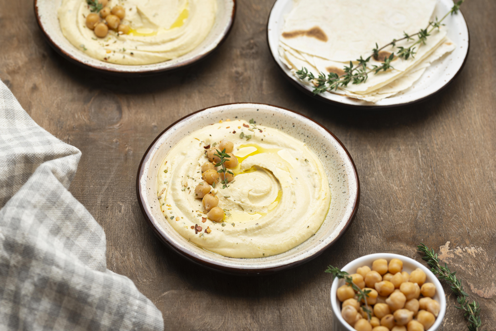

Hummus

Image by Freepik
Description
Hummus is a really easy to make delicious spread made up of mostly chickpeas.
The dish originates in the Middle East but has become widespread because of its simplicity.
It's also great for anyone on a plant-based diet because it is a naturally vegan dish,
that would also be a great introduction to any people curious about the diet.
Ingredients
To make hummus you will need:
- 200g dried chickpeas
- 1 teaspoon baking soda
- 50g tahini
- About 1 lemon's worth of lemon juice
- 2 garlic cloves
- ground cumin (to taste)
- salt (to taste)
- pepper (to taste)
- some cold water to thin the hummus to desired consistency
Steps
- Soak the chickpeas overnight.
Add the chickpeas to a large bowl (they will expand as they rehydrate).
Cover with cold water and a half teaspoon of baking soda. After about
8 hours drain and rinse the chickpeas. If using canned chickpeas this step is unnecessary.
- Cook the chickpeas. Cook the rinsed chicpeas on the stove
with another half teaspoon of baking soda. When the water is boiling add 1 teaspoon of salt
and cook for about 40 min or until the chickpeas are very soft. When cooked, drain and rinse.
-
Blend slightly cooled chickpeas in a food processor until you have a smooth puree.
Then add the tahini, lemon juice, minced garlic, cumin, pepper to taste, and a half teaspoon of salt.
Then blend the mixture again slowly adding some cold water to reach desired consistency.
You can add more seasoning at this point to your preference.
- Serve the hummus on a piece of bread and crunchy vegetables like capsicum and
enjoy!
Notes
This recipe was inspired by the recipe from Rainbow Plant Life or Nisha, a well-known vegan creator on Youtube.
She has some great vegan recipes if you're curious I highly recommend!